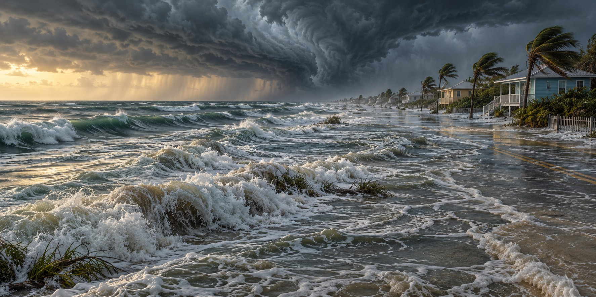

Storm Surge
Florida’s Greatest Threat

The Saffir–Simpson Hurricane Wind Scale classifies hurricanes by sustained wind speed. It does not measure every danger a storm brings. Along a low coast, water can rise far above its ordinary level and flood homes before the strongest winds arrive. Storm surge is one of the hazards that makes a wind category an incomplete guide to risk.
Not a Wave, and Not a Tsunami
The National Oceanic and Atmospheric Administration defines storm surge as an abnormal rise in sea level, above the normal predicted tide, generated by a storm’s winds. It is not a single wave crashing ashore, and it is not a tsunami, which comes from a sudden displacement of water such as an earthquake. Surge builds over hours as sustained onshore winds push an enormous volume of ocean toward the coast, raising the water level along a long stretch of shoreline.
Storm surge and the ordinary astronomical tide combine to produce storm tide. Wind-driven waves can ride on top of that elevated water. Flood depth, moving water, waves and debris all contribute to damage, so a surge height alone does not describe the forces a building may face.
A Statistic the Wind Scale Does Not Capture
A National Hurricane Center study of U.S. tropical cyclone deaths from 1963 to 2012 found that storm surge accounted for roughly 49 percent of direct tropical-cyclone deaths, nearly half from a cause the wind-based category rating does not measure. With rainfall flooding, rip currents and other water causes, water accounted for close to 90 percent. Wind, including embedded tornadoes, accounted for only about 11 to 12 percent.
NHC staff compared those results with direct fatalities from 2013 through 2022. Storm surge accounted for about 11 percent, while rainfall-driven freshwater flooding accounted for about 57 percent. The analysis attributed 41 direct deaths in Florida during Hurricane Ian to storm surge. These percentages concern direct deaths; indirect deaths associated with outages, cleanup or disrupted medical care are a separate category.
Why Florida’s Two Coasts Flood So Differently
A broad, gently sloping continental shelf can amplify storm surge. Much of Florida’s Gulf coast has this geography: wind can push water across a wide shallow area toward low land. Hurricane Ian showed how destructive that combination can be. The exact outcome also depends on the storm’s size, direction, speed and the shape of the shoreline.
Steeper offshore slopes can produce a different balance between surge and waves. Parts of Florida’s Atlantic coast have deeper water closer to shore, but that does not remove flood danger. Large waves can add destructive energy, and bays or inlets can concentrate water locally.
A Century of Borrowed Time
Tampa Bay illustrates why the storm’s path matters. A track that drives winds and water into a shallow bay can produce a different result from one that pulls water away. A long interval between direct major-hurricane landfalls is part of the area’s history, not a guarantee about its next storm.
The Mechanism Behind the History
With the mechanics in place, earlier Florida disasters come into focus. The 1928 Okeechobee flood came from the same wind-driven piling of water, applied to a shallow lake with a low mud dike. The Labor Day Hurricane of 1935 struck the shallow, Gulf-facing Keys with an eighteen-to-twenty-foot surge. Ian’s damage at Fort Myers Beach and Sanibel came from the same gently sloping shelf. These are not coincidences but the same geography producing the same kind of outcome.
Quick Facts
| Definition | Abnormal rise in sea level above the predicted tide, pushed by a storm’s winds |
|---|---|
| Not a tsunami | Surge is wind-driven and builds over hours; a tsunami comes from sudden underwater displacement |
| Deaths, 1963–2012 | About 49% of direct deaths from storm surge; nearly 90% from water-related causes |
| Deaths, 2013–2022 | About 11% of direct deaths from storm surge; about 57% from freshwater flooding |
| Gulf coast shelf | Broad shallow shelf can amplify surge |
| Atlantic coast shelf | Offshore slope and coastline shape affect surge and waves |
| Ian (2022) | Up to 15 feet of surge at Fort Myers Beach |
| Tampa Bay | Flooding depends on the storm track and local geography |
Did You Know?
Storm surge caused roughly half of direct U.S. tropical-cyclone deaths in the 50 years studied through 2012, yet the wind-based category rating does not measure it.
A gently sloping offshore shelf can amplify the rise of water at the coast.
The NHC analysis attributed 41 direct Florida deaths during Ian to storm surge.
Vocabulary
Storm surge: the abnormal rise of sea level pushed ashore by a storm’s winds.
Storm tide: storm surge plus the normal astronomical tide.
Continental shelf: the shallow, gently sloping seafloor that extends outward from a coast.
Discussion Questions
1. Why does a hurricane’s wind category fail to predict how deadly it will be?
2. How do the shapes of Florida’s two coastlines change what surge does?
Related Articles
FLH-0004 — The Okeechobee Hurricane of 1928
FLH-0005 — The Labor Day Hurricane of 1935
FLH-0012 — Hurricane Ian (2022)
FLH-0010 — Hurricane Wilma (2005)
FLH-0027 — Why Lake Okeechobee Became Dangerous
Sources
NOAA. “Storm Surge, the Deadliest Threat from Tropical Cyclones” and “Explainer: Understanding Hurricane Hazards.” noaa.gov
National Hurricane Center. “Storm Surge Overview.” nhc.noaa.gov
Yale Climate Connections. “What New Data Reveal About How Hurricanes Kill.” yaleclimateconnections.org
American Meteorological Society. “Recent Trends in Tropical Cyclone Fatalities in the United States.” blog.ametsoc.org
Fox Weather. “Why Florida’s Gulf Coast Is Susceptible to a Hurricane’s Storm Surge.” (citing Ed Rappaport, NHC). foxweather.com
Florida Climate Center, Florida State University. “Hurricanes.” climatecenter.fsu.edu